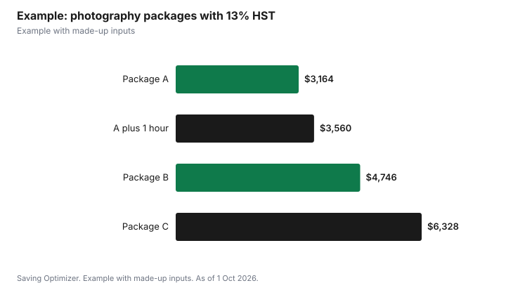

Weddings · Canada
Wedding Photographer Costs in Canada: Packages, Hours and Contracts
A wedding photographer's price depends mainly on hours of coverage, a second shooter and what you receive afterward, so the best way to control cost is to match coverage to your timeline and skip extras you will not use. Packages commonly bundle a set number of hours, edited digital images and an online gallery, with albums, prints, engagement sessions and travel extra. Under Canada's Copyright Act, the photographer is the first owner of the copyright, but you can use commissioned wedding photos for private, non-commercial purposes unless your contract says otherwise. Get hours, delivery time, image count, rights and cancellation terms in writing.
Key takeaways
- Price is driven by hours, second shooter and deliverables.
- Map your timeline to see how many hours you need.
- The photographer owns the copyright under the Copyright Act unless the contract assigns it.
- You may use commissioned photos for personal, non-commercial purposes unless agreed otherwise.
- Drones of 250 g or more need registration and a certified pilot.
- Example with made-up inputs: three packages compared.
What packages include
| Item | Often included | Often extra |
|---|---|---|
| Coverage hours | A set block | Extra hours |
| Second shooter | Higher tiers | Lower tiers |
| Edited digital images | Yes, online gallery | Retouching beyond basic edits |
| Engagement session | Higher tiers | Lower tiers |
| Album and prints | Sometimes | Often |
| Travel | Local area | Distance, ferries, hotel |
Ask how many edited images to expect, how long delivery takes, how long the online gallery stays live and whether you can download full-resolution files. Ask whether the price includes sales tax.
Hours you actually need
List the moments you want covered: getting ready, first look, ceremony, family photos, couple portraits, cocktail hour, entrances, speeches, first dance and some dancing. One common approach is coverage from the last hour of getting ready through the first hour of dancing captures what matters. Compressing the timeline, such as holding the ceremony and reception at the same place or doing portraits before the ceremony, can cut an hour or two.
| Moment | Approximate time needed |
|---|---|
| Getting ready (last part) | 1 hour |
| Ceremony | 30 to 60 minutes |
| Family photos | 30 minutes |
| Couple portraits | 45 to 60 minutes |
| Cocktail hour and room details | 1 hour |
| Entrances, speeches, first dance | 1.5 hours |
| Open dancing | 30 to 60 minutes |
These times are planning estimates, not rules; ask your photographer how they would schedule your day.
Second shooters
A second photographer covers two places at once, such as both partners getting ready, or candid guest shots during portraits. It helps with large weddings and venues spread across several rooms. For a small wedding in one place, one photographer may be enough.
Rights and deliverables
Section 13 of the Copyright Act says the author of a work is the first owner of its copyright, so the photographer generally owns the copyright in your wedding photos, unless your contract transfers it. Section 32.2 lets an individual use, for private or non-commercial purposes, a photograph or portrait they commissioned for personal purposes and paid for, unless the individual and the copyright owner agree otherwise. Read the contract for any limits, such as credit requirements when sharing online, and for whether the photographer may use your images in marketing; ask to opt out if you prefer privacy.
Drones
If your photographer offers aerial shots, Transport Canada requires drones weighing 250 grams or more to be registered and marked and the pilot to carry a valid pilot certificate. Under basic operations, the drone must stay at least 30 metres horizontally from any person; flying closer to or over people requires an advanced certificate and a drone that meets safety requirements. Microdrones under 250 grams need no certificate but must follow microdrone rules. Ask the photographer which certificate they hold and check the venue allows drones.
Comparing portfolios
Highlight reels show a photographer's best frames. Ask to see two or three complete galleries from weddings similar to yours, in similar light: an indoor winter reception, a dim hall or a bright outdoor ceremony. Look at how they handle family groups, low light during speeches and candid guest moments, not only posed portraits. Check reviews that mention communication, punctuality and delivery times. A short video call helps you judge whether you will be comfortable with the person who will follow you all day.
Engagement sessions and extras
An engagement session can help you get used to being photographed and gives you images for save-the-dates. If it is not included, ask what it costs on its own and whether it can be credited toward your package. Other extras, such as a photo booth, same-day slideshow, parent albums and rush delivery, add up quickly; decide which ones you would actually use before you compare packages. You can often order prints and albums later from the online gallery, which spreads the cost after the wedding.
Deposits and contracts
- Deposit amount and whether it is refundable.
- Payment schedule and balance due date.
- What happens if the photographer is ill: replacement or refund.
- Cancellation and postponement terms for both sides.
- Delivery time, image count and gallery length.
- Overtime rate per hour.
- Meal and break requirements on the day.
Ways to save
- Book fewer hours and plan a tight timeline.
- Skip the album now; order one later from your gallery.
- Choose a Friday, Sunday or off-season date and ask about rates.
- Hire a newer photographer with a strong portfolio for a lower rate.
- Ask a friend to take candid shots during cocktail hour.
Example with made-up inputs
These numbers are an example with made-up inputs. Package A: six hours, one photographer, online gallery, $2,800. Package B: eight hours, second shooter, engagement session, $4,200. Package C: ten hours, second shooter, engagement session and album, $5,600. With 13% HST: $3,164, $4,746 and $6,328. A couple whose timeline needs seven hours could take Package A plus one extra hour at a made-up $350, $3,150 plus HST, $3,559.50, and add an album later if they want one.
| Package | Before tax | With HST |
|---|---|---|
| A: 6 hours, one photographer | $2,800 | $3,164.00 |
| A plus 1 extra hour | $3,150 | $3,559.50 |
| B: 8 hours, second shooter, engagement | $4,200 | $4,746.00 |
| C: 10 hours, second shooter, engagement, album | $5,600 | $6,328.00 |

Checklist
- Write your timeline and count hours.
- Shortlist photographers by portfolio, then compare packages.
- Ask for full galleries from real weddings, not only highlights.
- Read the contract for rights, delivery and cancellation.
- Confirm drone certification if aerial shots are offered.
- Pay the deposit by a traceable method and keep records.
Common mistakes
- Booking more hours than the timeline needs.
- Assuming you own the copyright.
- Not checking delivery times and gallery expiry.
- Forgetting overtime and tax.
- Not planning a meal for the photographer.
Related: is a videographer worth it and vendor contracts.
Sources
- Copyright Act, R.S.C. 1985, c. C-42, sections 13 and 32.2, laws-lois.justice.gc.ca, as of 1 Oct 2026.
- Transport Canada, Flying your drone safely and legally; Drone operation categories: Basic operations, tc.canada.ca, as of 1 Oct 2026.
- Canada Revenue Agency, GST/HST rates, canada.ca, as of 1 Oct 2026.
- Package prices, hours and the overtime rate in the example are made-up inputs.
Frequently asked questions
Who owns the copyright in wedding photos in Canada?
Under the Copyright Act, the author, usually the photographer, is the first owner unless the contract transfers it.
Can I share my wedding photos online?
You may use commissioned photos for private or non-commercial purposes unless your contract says otherwise. Check for credit requirements.
How many hours of wedding photography do I need?
It depends on your timeline. List the moments you want and estimate time for each.
Is a second shooter worth it?
For large weddings or venues with several locations, often yes. For small, single-location weddings, one may be enough.
Does a wedding drone pilot need a licence?
Drones of 250 g or more must be registered and the pilot needs a Transport Canada certificate.
How can I save on a photographer?
Book fewer hours, skip the album until later and consider off-peak dates.
Researched and drafted with AI assistance and fact-checked against official Canadian sources. How we create content.
Disclosure: Saving Optimizer may earn a commission if a partner link is added later. No partnership is claimed on this page. Education only.